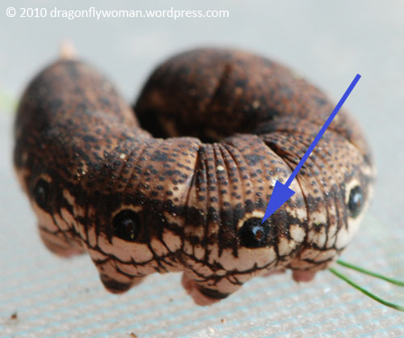

Species diversity

Why are insects so successful and diverse?
Why are insects cool to study?
Phylum: Arthropoda

Shedding exoskeletons, segmented bodies, jointed appendages
Superphylum: Ecdysozoa
Instars

Myriapoda: indeterminate segmentation
Tardigrada: not insects
Class: Insecta
Class: Insecta

Class: Insecta
6 legs, determinate segmentation, compound eyes, external mouthparts, 1 pair antennae
About 1 million species

Respiration
Respiration
Thysaneura: silverfish
Thysaneura: silverfish
Ephemeroptera: mayflies